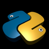

Sphinx and RST syntax

Sphinx is a tools used to write software documentation, but not only. It is mainly used within the Python community, but not only... There are already many good tutorials and documentation about it. So why another tutorial? As you know writing down ideas helps to understand and since I've been using it a lot professionally, I've started to took notes about how to use it, which I gathered within my own Sphinx and ReST syntax tutorial. It could be of interest for some of you, so here it is.
Python language
Similarly, I'm gathering notes about the Python language. It's covers quite a lot but is definitely not complete yet. Beginners will probably find it intimidating but there some sections just for you. More advanced users may find some examples useful and information about more advanced topics (e.g., decorators). Jump to the Python notes.